① 照節次讀：每一節先讀說明、動手玩互動元件，預測結果再按按鈕驗證。 ② 對照講義：頁上 §徽章對應 cppds 章節；講義的完整程式收在各節的收合區，展開即可閱讀，預期輸出直接列在下方。 ③ 每節做 quiz：答錯就回到該節重讀，不要往下跳。 ④ 最後讀重點回顧，再翻 關鍵詞彙卡（16 張）自測術語（中文為主、術語附英文）。標「課堂略過・自學」的節是講義內容，只是上課沒有細講，請自己讀完；標「（補充）」的收合區是網站另加、講義沒有的延伸，第一輪可略過。
堆疊（stack）、佇列（queue）、雙端佇列（deque）都是線性結構：元素之間只有「前後」關係， 新增與移除發生在端點。差別只在「哪一端進、哪一端出」：這個小差別決定了它們完全不同的用途。
stack/queue/deque；課程標頭的 Stack、Queue、Deque 是作業用介面。線性結構是一群依加入或移除的方式而有順序的資料。一個元素加入之後，相對於比它早來和比它晚來的元素，它的位置就固定了。這類集合稱為線性 ADT（linear ADT）。
線性 ADT 可以想成有兩端，有時叫左端與右端，有時叫 front（前端）與 rear（後端）。各種線性結構的差別，在於元素從哪一端加入、從哪一端移除：
| 結構 | 加入的位置 | 移除的位置 | 順序原則 | C++ 標準函式庫 | 課程標頭 |
|---|---|---|---|---|---|
| Stack 堆疊 | top | top（同一端） | LIFO：後進先出 | std::stack<T> | stack.hpp 的 Stack<T> |
| Queue 佇列 | rear | front | FIFO：先進先出 | std::queue<T> | queue.hpp 的 Queue<T> |
| Deque 雙端佇列 | 兩端皆可 | 兩端皆可 | 不限定，由使用者決定 | std::deque<T> | deque.hpp 的 Deque<T> |
本章的程式以 C++ 標準函式庫（STL）為主：std::stack、std::queue、std::deque。它們的 pop() 只移除元素、不回傳值，需要值的時候要先用 top() 或 front() 讀出來。
課程標頭 pythonds3/cppds/ 另外提供以 vector 實作的 Stack<T>、Queue<T>、Deque<T>，方法名稱是 peek、isEmpty、enqueue、dequeue、addFront 這一類，pop／dequeue 會回傳被移除的值。作業明確要求時才用課程標頭；兩套介面的方法名稱不同，不能混用。stack、queue、deque 三節各附一張 API 對照表。
堆疊只在同一端（top）加入與移除。想像疊盤子：最後放上去的盤子一定最先被拿走 ： LIFO（last-in first-out）。它天生就是「反轉順序」的機器。
stack（也叫 push-down stack）是一個有順序的集合，新增元素與移除元素永遠在同一端進行，這一端叫 top，另一端叫 base。越靠近 base 的元素在 stack 裡待得越久；最近加入的元素，會最先被移除。這個原則叫 LIFO（last in, first out，後進先出）。所以 stack 依「在集合中待了多久」排列元素：新的靠近 top，舊的靠近 base。
餐廳裡疊起來的餐盤就是一例：客人拿走最上面的一個，下面的一個才露出來。桌上的一疊書也一樣，只看得到最上面那本的封面；要拿下面的書，得先把壓在上面的書拿走。
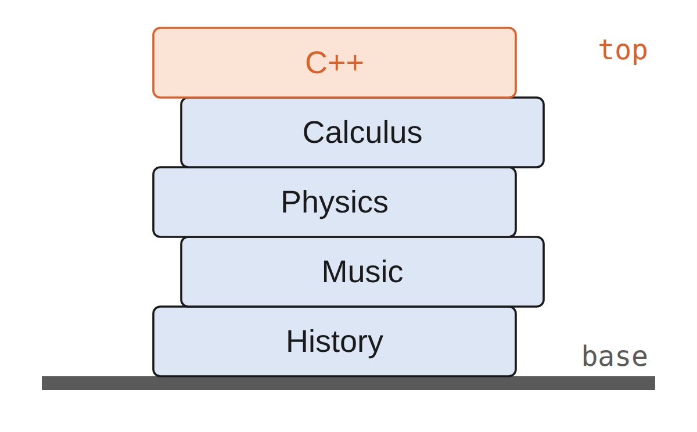
從空桌面開始，一本一本把書往上疊，就是在建立一個 stack。開始拿書時，拿走的順序正好和放上去的順序相反。stack 的一個重要用途就是反轉順序：移除的順序是加入順序的反向。
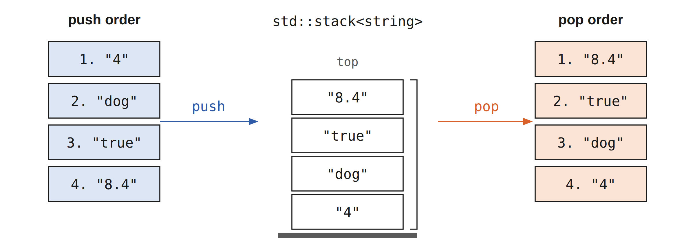
瀏覽器的「上一頁」按鈕也是 stack。每瀏覽一個新網頁，它的網址就放到 stack 上；目前看的網頁在 top，最早看的網頁在 base。按下「上一頁」，就依相反的順序一頁一頁退回去。
cppds 的 C++ 正文以 std::stack 為主線：push(item)、
top()、pop()、empty()、size()。
STL 的 pop() 只移除、不回傳；需要值時要先讀 top()。
| 操作 | Stack 內容（top 在右） | 回傳 |
|---|---|---|
| s.empty() | [] | true |
| s.push(4) | [4] | void |
| s.push(7) | [4, 7] | void |
| s.top() | [4, 7] | 7 |
| s.pop() | [4] | void |
| s.size() | [4] | 1 |
一個 C++ stack 物件只裝一種型別。
C++ 標準函式庫的 std::stack<T> 是一種容器轉接器（container adapter）：元素預設存放在 std::deque 裡，但對外只開放 LIFO 的操作。使用 stack 的程式只依賴 stack 的介面，不能讀寫底層容器的任意位置。
push(item)：把 item 放到 top，回傳 void。top()：讀取 top 的元素，但不移除。pop()：移除 top 的元素，回傳 void；需要那個值時，先呼叫 top()。empty() 檢查是否為空；size() 回傳元素個數。top() 或 pop() 違反前提條件（precondition），結果是未定義行為。一個 stack 物件只存一種型別，例如 stack<string>：
下面的程式依序 push 三個字串，再檢查大小、是否為空，以及 top 的元素：
3 false true dog
"true" 最後 push，所以在 top；pop 移除它之後，top 變成 "dog"。boolalpha 讓 bool 值印成 true／false 而不是 1／0。
| 介面 | 建立 | 讀取 top | 移除 top |
|---|---|---|---|
STL std::stack<T> | std::stack<T> s; | top() | pop()，回傳 void |
課程標頭 stack.hpp 的 Stack<T> | Stack<T> s; | peek() | pop()，回傳 T |
| HW3 定容量 stack | Stack<T> s(capacity); | stackTop() 或 peek(index) | pop()，回傳 T |
HW3 的類別另外提供 isFull()。三套介面的方法名稱不同，寫程式時要看清楚用的是哪一套。課程標頭的 Stack<T> 以 vector 的尾端當 top，push 與 pop 都只動最後一格：
也可以把 top 放在 vector 的開頭。這時 push_back() 與 pop_back() 碰不到 top，只能改用 insert(begin()) 與 erase(begin())。每次 push 和 pop 都要把其餘元素搬動一格，原本 $O(1)$ 的操作變成 $O(n)$。
stack.hpp 也提供這個 Stack2。用起來和其他 stack 完全一樣：
true 7.5 3 2 7.5 1
輸出顯示 Stack2 的行為仍然正確：peek 看到最後 push 的 7.5；連續兩次 pop 依序取出 2 與 7.5，最後剩 1 個元素。
換掉實作方式、保留邏輯上的行為，就是抽象化。不過兩種實作的效能不同：std::stack 預設以 deque 為底層，push、pop、top 都是常數時間；以 vector 尾端當 top 的 Stack，push_back 是攤銷 $O(1)$，pop_back 是 $O(1)$；Stack2 刻意把 top 放在 vector::begin()，插入與刪除都要搬動元素，成本是 $O(n)$。ADT 的行為相同，不代表實作的成本相同。
| n（push n 次、再全部 pop） | Stack（top 在尾端）搬移元素數 | Stack2（top 在開頭）搬移元素數 |
|---|---|---|
| n = 10 | 0 | 90 |
| n = 100 | 0 | 9,900 |
| n = 1,000 | 0 | 999,000 |
Stack2 第 k 次 push 時，stack 裡已有 k − 1 個元素，insert(begin()) 要把它們全部往後搬一格；pop 時 erase(begin()) 也要把其餘元素往前搬。push n 次共搬 $0+1+\cdots+(n-1)=\frac{n(n-1)}{2}$ 次，全部 pop 再搬同樣多次，合計 $n(n-1)$ 次，約 $n^2$。以 vector 尾端當 top 的 Stack 只動最後一格，不必搬移任何元素（容量不足時的重新配置除外）。
執行下列程式之後，top 的元素是什麼？
執行下列 std::stack 程式會發生什麼事？
依序執行 s.push(4); s.push(7); s.pop(); s.push(2); s.top(); 之後，top() 回傳什麼？stack 內容（由底至頂）是什麼？
用 std::stack<char> 寫出 revString，把字串反過來。程式留了兩個空：第一步把每個字元 push 到 s 上，第二步從 s 一個一個 pop，組成 rStr。
USYSN
USYSN
N、S、Y、S、U 依序 push 之後，最後的 U 在 top；pop 的順序是 U、S、Y、S、N，接起來就是反轉後的字串。
revString 只是「全部 push、再全部 pop」就完成反轉。背後的原因是？
課堂上略過這兩節，屬於自學內容， 但它是 stack 最經典的應用，編譯器每天都在做這件事，建議別跳。
編譯器怎麼知道 (() 少了一個右括號？由內往外配對的結構剛好是 LIFO：
每個右括號要配的是「最近一個還沒配對的左括號」：這就是 stack 的 top。
寫算術式 $(5 + 6) \times (7 + 8) / (4 + 3)$ 時，括號用來決定運算的順序。有些程式語言的語法也大量使用括號，例如：
(defun square(n)
(* n n))
這兩個例子中，括號都必須平衡：每個左括號都有對應的右括號，而且成對的括號正確地巢狀。要辨認許多程式語言的結構，得先能分辨括號是否平衡。問題是：由左到右讀一串括號，判斷它們是否平衡。
由左到右處理時，下一個右括號必須和最近的一個左括號配對；第一個左括號，則可能要等到最後一個符號才配對。
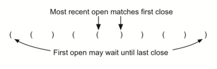
右括號配對左括號的順序，和左括號出現的順序相反，由內往外配對，這是可以用 stack 解決的線索。
true true false false
前兩個字串平衡，輸出 true；"(()" 讀完時 stack 還剩一個左括號，")(" 第一個符號就是右括號而 stack 是空的，兩者都輸出 false。
parChecker 遇到 ( 就 push；其他符號都當成右括號處理。這裡的 pop() 只是移除符號，不需要它的值，因為 stack 裡放的一定是先前讀到的 (。如果字串還沒讀完 stack 就空了，表示右括號太多，函式立刻回傳 false；讀完之後，只有 stack 完全清空，字串才是平衡的。
下面的動畫已經能處理三種括號，下一小節會說明這個一般化的版本。
())( 讀到第 3 個符號時）。[)）。(()）。在 C++ 中，方括號用於陣列索引，大括號界定區塊或初始化，小括號用於分組運算式與函式呼叫。只要每一種括號各自維持正確的開閉關係，就可以混合使用。下面的字串是平衡的：每個左符號都有對應的右符號，而且種類相符：
{ { ( [ ] [ ] ) } ( ) }
[ [ { { ( ( ) ) } } ] ]
[ ] [ ] [ ] ( ) { }
下面這些則不平衡：
( [ ) ]
( ( ( ) ] ) )
[ { ( ) ]
左符號一樣 push 到 stack 上，等待對應的右符號。遇到右符號時，唯一多出來的工作是確認它和 stack 頂端的左符號種類相符；不相符，字串就不平衡。整個字串處理完、stack 也清空了，字串才是平衡的。講義用一個輔助函式 matches(open, close) 做這個檢查：
allLefts 與 allRights 把同一種括號放在相同的位置；兩個符號各自 find 到的位置相同，就是一對。
true false
"{({([][])}())}" 平衡；"[{()]" 讀到最後的 ] 時，stack 頂端是 {，種類不合，所以回傳 false。可以在上方動畫輸入 [{()] 觀察這一步。
處理程式語言的結構時常會用到 stack：幾乎任何記法都有需要成對、而且依正確順序配對的符號。
反覆「除以基底、記下餘數」會由低位往高位產生數字，但我們書寫時要從高位開始： 又是一個「產生順序與使用順序相反」的問題，stack 出場。
電腦裡所有的值都以二進位數字，也就是一串 0 與 1 存放。我們平常用十進位表示整數；十進位的 $233_{10}$ 與它的二進位 $11101001_2$ 分別代表：
$$2\times10^{2} + 3\times10^{1} + 3\times10^{0}$$ $$1\times2^{7} + 1\times2^{6} + 1\times2^{5} + 0\times2^{4} + 1\times2^{3} + 0\times2^{2} + 0\times2^{1} + 1\times2^{0}$$
把整數轉成二進位的方法叫 Divide by 2，它用 stack 記錄結果的每一位。演算法假設從一個大於 0 的整數開始，不斷除以 2，並記下每次的餘數。
第一次除以 2 的餘數說明這個數是偶數還是奇數：偶數的個位是 0，奇數的個位是 1。把結果看成一串數字，第一個算出的餘數其實是最後一位。
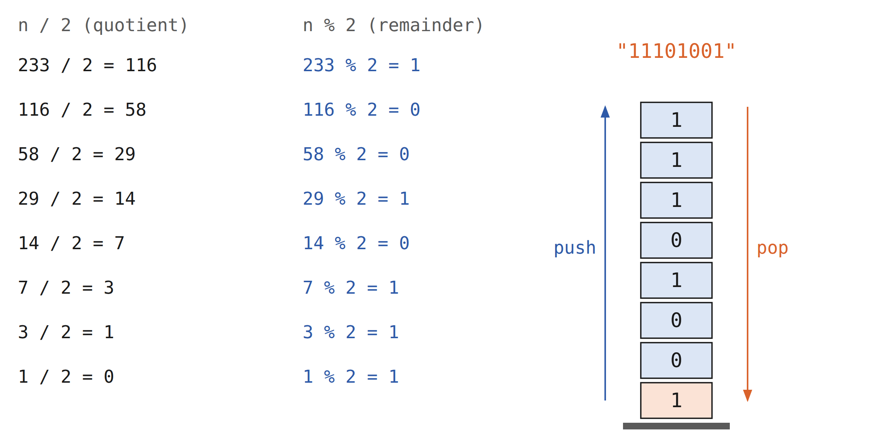
這裡又出現了反轉的性質，表示 stack 很可能是合適的資料結構。下面的 divideBy2() 接收一個十進位數，不斷除以 2，把餘數 push 到 stack，最後依序 pop 組成二進位字串：
101010 11111
42 的二進位是 101010，31 是 11111。to_string 把 int 型別的餘數轉成字串，再接到 binString 後面。
baseConverter(25, 2) 的結果是？（可用上面的動畫驗證）
這個方法很容易推廣到其他進位。電腦科學中常用的除了二進位，還有八進位（base 8）與十六進位（base 16）。$233_{10}$ 的八進位是 $351_8$，十六進位是 $E9_{16}$，分別代表：
$$3\times8^{2} + 5\times8^{1} + 1\times8^{0}$$ $$14\times16^{1} + 9\times16^{0}$$
只要把「除以 2」換成「除以 base」，divideBy2() 就能接收要轉換的進位。二到十進位最多需要 10 個數字，0 到 9 就夠用；超過十進位時，10 以上的餘數本身是兩位數，不能直接寫進結果，需要另外的符號。digits 字串用 A 到 F 表示 10 到 15，餘數就是 digits 的索引。
11001 19
25 的二進位是 11001，十六進位是 19（1 × 16 + 9）。上方動畫可以選 base 16，觀察餘數 10 以上時 digits 的作用。
十進位的 25 寫成八進位是多少？
寫 A + B * C 的時候，誰先算？人靠兩條默契：優先權（乘除高於加減）
和結合律（同級由左到右）。括號則能推翻默契。這種「運算子夾在中間」的寫法叫
中序（infix），對人友善，對機器是負擔：電腦得先讀懂整套默契才知道順序。
把運算子搬到運算元前面就是前序（prefix），搬到後面就是後序 （postfix）。神奇的是，搬完之後括號和優先權表都不需要了，順序資訊全部藏在位置裡：
| 中序 | 前序 | 後序 |
|---|---|---|
| A + B | + A B | A B + |
| A + B * C | + A * B C | A B C * + |
| (A + B) * C | * + A B C | A B + C * |
| A + B * C + D | + + A * B C D | A B C * + D + |
| (A + B) * (C + D) | * + A B + C D | A B + C D + * |
| A * B + C * D | + * A B * C D | A B * C D * + |
| A + B + C + D | + + + A B C D | A B + C + D + |
寫 B * C 時，運算子 * 出現在兩個運算元之間，所以知道是 B 乘以 C；運算子夾在運算元中間的寫法叫中序（infix）。A + B * C 就有歧義了：+ 作用在 A 與 B，還是 * 作用在 B 與 C？每個運算子都有優先權（precedence level），優先權高的先算；只有括號能改變這個順序。乘除的優先權高於加減；優先權相同時，依結合律（associativity）由左到右計算。所以 A + B * C 先算 B 乘 C 再加 A；(A + B) * C 先算 A 加 B；A + B + C 先算左邊的 +。
電腦必須確切知道要做哪些運算、以什麼順序做。一種保證沒有歧義的寫法叫完全括號運算式（fully parenthesized expression）：每個運算子都有一對括號，括號決定運算的順序。例如 A + B * C + D 寫成 ((A + (B * C)) + D)，表示先乘、再算左邊的加法；A + B + C + D 寫成 (((A + B) + C) + D)，因為加法由左往右結合。
看 (A + (B * C)) 中子式 (B * C) 的右括號：把 * 移到這個位置，再刪掉對應的左括號，得到 B C *，子式就轉成了後序。+ 也移到它的右括號、刪掉對應的左括號，就得到完整的後序式。若改成移到左括號的位置，得到的是前序。一對括號的位置，就是括號內運算子最後的位置。
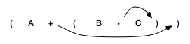
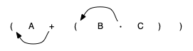
所以不論運算式多複雜，都可以先依運算順序把它完全括號化，再依需要把每個運算子移到左括號（前序）或右括號（後序）的位置：
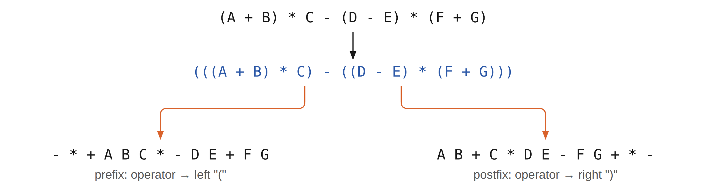
再看一次 A + B * C，它的後序是 A B C * +。運算元 A、B、C 的相對位置沒有改變，移動的只有運算子。由左往右，第一個出現的運算子是 +，但在後序中 + 排在最後，因為後面的 * 優先權比較高。原式中運算子的順序，在後序中反轉了。
處理運算式時，運算子的右運算元還沒讀到，運算子必須先存起來；而且因為優先權，存起來的運算子可能要反轉順序。所以用 stack 保存運算子，等到需要時再取出。
(A + B) * C 的後序是 A B + C *。由左往右處理時同樣先看到 +；不同的是，讀到 * 的時候，+ 已經輸出了，因為括號讓它的優先權高於 *。轉換演算法讀到左括號時把它存起來，表示之後會有一個高優先權的運算子；這個運算子要等對應的右括號出現，才決定它的位置。右括號出現時，就從 stack 把運算子 pop 出來。
假設中序式是一串以空白分隔的 token，運算子有 *、/、+、-，以及左右括號。stack 頂端永遠是最近存入的運算子，讀到新的運算子時，就拿它和頂端的運算子比較優先權。下面四步會得到後序的 token 串：
std::stack<string> opStack 與空的 vector<string> postfixList。std::istringstream 把中序字串切成 token。( push 進 opStack；) 則一路 pop opStack，把運算子加到 postfixList，直到移除對應的 (；運算子 *、/、+、- 先把 opStack 上優先權大於或等於自己的運算子全部 pop 到 postfixList，再把自己 push 進去。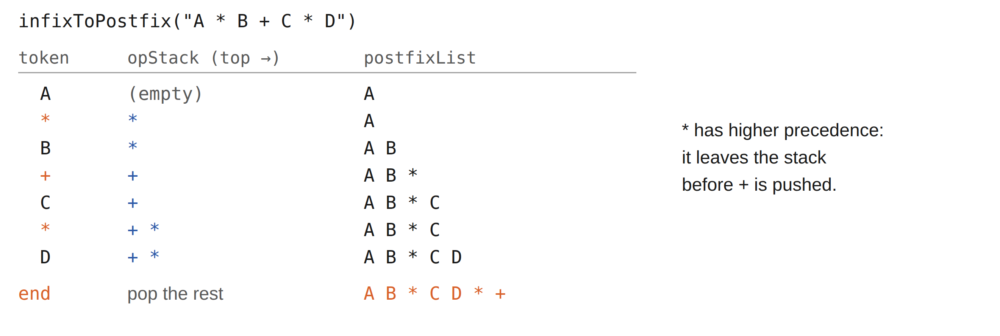
演算法的核心迴圈如下：運算元直接輸出，運算子在 stack 上等待，直到讀到優先權較低的運算子：
| token | opStack（top 在右） | postfixList |
|---|---|---|
| A | A | |
| * | * | A |
| B | * | A B |
| + | +（* 優先權較高，先 pop 到輸出） | A B * |
| C | + | A B * C |
| * | + *（* 比 + 高，直接 push） | A B * C |
| D | + * | A B * C D |
| 結束 | 依序 pop 剩下的運算子 | A B * C D * + |
下面的動畫可以逐步觀察三個例子；右側的程式是動畫所用的簡化流程。
( A + B ) * C 的後序表達式是？
要讓轉換器支援右結合的 ^（次方），pop 條件要怎麼改？5 * 3 ^ ( 4 - 2 ) 的後序是？
完整的轉換器放在課程標頭 pythonds3/cppds/expression.hpp：用 stringstream 以空白切出 token，跑完核心迴圈後，把 stack 剩下的運算子全部 pop 到輸出，再把 postfixList 接成以空白分隔的字串。
prec 把 ( 的優先權設成最低的 1：左括號留在 stack 裡時，任何運算子都不會因為優先權把它 pop 出去，它只會在讀到右括號時被移除。
A B * C D * + A B + C * D E - F G + * -
token 之間必須有空白，程式才切得出來。第二個運算式的括號在後序中全部消失了。
接著計算一個已經是後序的運算式，stack 仍然是合適的資料結構。不過這一次，掃描時等待的是運算元，而不是轉換時的運算子。換個角度說：每讀到一個運算子，就拿最近的兩個運算元來計算。
以 4 5 6 * + 為例：由左往右先讀到 4 與 5，這時還不知道要拿它們做什麼，得等看到下一個符號。把它們放到 stack 上，若接下來是運算子，就能立刻取用。
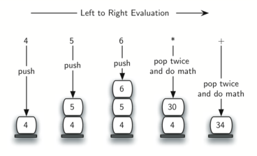
稍微複雜的例子是 7 8 + 3 2 + /。這裡有兩點要注意：第一，計算子式時，stack 會先變高、變矮、再變高；第二，除法要小心處理。後序只改變運算子的位置，運算元仍是原來的順序；從 stack pop 出除法的兩個運算元時，順序是反過來的。除法不滿足交換律，所以不能把兩個運算元的順序弄反。
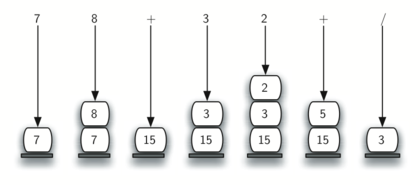
std::stack<double> operandStack。std::istringstream（講義程式用 stringstream）切出 token，由左到右處理。stod 把字串轉成數字，push 到 operandStack。計算一個運算子需要一個小輔助函式 doMath()，把運算子套用到兩個運算元：
3
結果 3 就是 (7 + 8) / (3 + 2)。postfixEval 回傳 double，值剛好是整數 3.0 時，cout 印成 3。
轉換與求值兩個程式都假設輸入的運算式沒有錯誤。
把中序式 10 + 3 * 5 / ( 16 - 4 ) 轉成後序：
計算後序式 17 10 + 3 * 9 / 的值：
擴充 infixToPostfix()，讓它能轉換 5 * 3 ^ ( 4 - 2 )。
5 3 4 2 - ^ *
提示：給 ^ 最高的優先權。因為 ^ 是右結合，讀到 ^ 時，只有當 stack 上運算子的優先權嚴格大於 ^ 時才 pop。轉換結果 5 3 4 2 - ^ * 的值是 45。
5 3 4 2 - ^ * 2 3 2 ^ ^
右結合表示 2 ^ 3 ^ 2 = 2 ^ (3 ^ 2) = 512，而不是 (2 ^ 3) ^ 2 = 64。程式第二行的輸出 2 3 2 ^ ^ 就是先算 3 ^ 2。只提高 ^ 的優先權還不夠，同優先權時要不要 pop 的條件也必須改。
佇列在 rear 加入、front 移除，先來的先被服務（FIFO）。
作業系統的工作排程、印表機隊伍、BFS 的「下一層名單」全是 queue。cppds C++ 正文使用
std::queue：push 從 rear 加入，front 讀取最前端，
pop 移除但不回傳。enqueue/dequeue/isEmpty 是課程實作 Queue<T> 的作業用介面。
queue 是一個有順序的集合，新元素從一端加入，這一端叫 rear；既有的元素從另一端移除，這一端叫 front。元素從 rear 進入後，一路往 front 移動，直到輪到它被移除。在集合中待得最久的元素位於 front。這個原則叫 FIFO（first in, first out，先進先出）。
最簡單的例子是排隊：排隊看電影、在超市排隊結帳、在餐廳排隊取餐。規矩的隊伍限制很嚴格，只有一個入口、一個出口；不能從中間插隊，也不能在輪到之前離開。
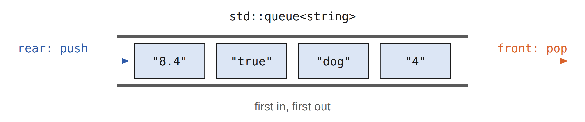
電腦科學裡也常見 queue。作業系統用好幾種不同的 queue 管理電腦裡的行程（process）：接下來要執行什麼，通常由一個排隊演算法決定，目標是盡快執行程式，同時服務越多使用者越好。
std::queue<T> q; 建立一個空的 queue。push(item) 把 item 加到 rear，回傳 void。front() 與 back() 讀取兩端的元素。pop() 移除 front 的元素，回傳 void。empty() 與 size() 檢查 queue 的狀態。需要被移除的那個值時，先呼叫 front()，再呼叫 pop()。對空的 queue 呼叫 front()、back() 或 pop() 都違反前提條件。下表把 front() 畫在左邊、back() 畫在右邊，和 STL 的一般看法一致：
| 操作 | Queue 內容（front 在左） | 回傳 |
|---|---|---|
| q.empty() | [] | true |
| q.push(4) | [4] | void |
| q.push(7) | [4, 7] | void |
| q.front() | [4, 7] | 4 |
| q.back() | [4, 7] | 7 |
| q.pop() | [7] | void |
C++ 標準函式庫的 std::queue<T> 用 push 加入，用 front 讀取，再用 pop 移除（回傳 void）；back 讀取 rear 的元素。以預設的 deque 為底層時，這些操作都是 $O(1)$。
3 false 4 dog
"4" 最先 push，所以在 front；pop 移除它之後，front 變成 "dog"。和 stack 的例子用同樣的三個字串，取出的順序正好相反。
課程標頭 pythonds3/cppds/queue.hpp 為了作業使用 enqueue、會回傳值的 dequeue 與 isEmpty。它把 rear 放在 vector 的開頭、front 放在尾端：dequeue 是 pop_back，$O(1)$；enqueue 要 insert(begin())，把所有元素往後搬一格，$O(n)$。
| std::queue<T> | 課程標頭 Queue<T> | 說明 |
|---|---|---|
push(x) | enqueue(x) | 加到 rear |
front() 再 pop() | dequeue() | dequeue 移除 front 並回傳它的值 |
empty() | isEmpty() | 是否為空 |
size() | size() | 元素個數 |
back() | 沒有對應的方法 | Queue<T> 不提供讀取 rear |
執行下列 queue 操作之後，queue 裡還有哪些元素？
一群人圍圈傳山芋，數到第 num 下的人出局。queue 的「讀 front、push 到 rear、再 pop」剛好模擬 把手上的東西傳給下一個人：front 的人傳完就排到隊伍最尾。
燙手山芋是一個兒童遊戲：小朋友圍成一圈，盡快把手上的東西傳給旁邊的人。遊戲在某個時刻停下，拿著山芋的人離開圓圈，其他人繼續玩，直到只剩一個人。
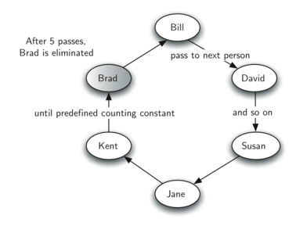
模擬程式 hotPotato 接收一個 vector<string> 名單與次數 num。進行中的圓圈用 std::queue<string> 表示，函式回傳最後剩下的名字。
假設拿著山芋的人在 queue 的 front。傳一次山芋，模擬程式就把這個人從 front 移除，再立刻加到 rear，讓他排到隊伍最後面：
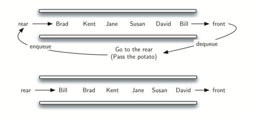
做完 num 次「移除再加入」之後，front 的人永久移除，開始下一輪。持續進行，直到只剩一個名字，也就是 queue 的大小為 1。
六人 [Bill, David, Susan, Jane, Kent, Brad]、num = 7 時，最後留下來的是誰？（動畫可驗證）
Susan
名字依給定的順序 push，所以第一個名字一開始在 front()。移動一位玩家，就是複製 front() 的值、push 到 rear，再 pop 掉原本的 front。
每一輪傳 num 次，共要淘汰 n − 1 個人，所以整個模擬做了約 $(n-1)\times num$ 次傳遞，每次傳遞是常數個 queue 操作，總成本是 $O(n \cdot num)$。
out: David out: Kent out: Jane out: Bill out: Brad winner: Susan
每一輪結束時印出 front 的名字再 pop。出局順序是 David、Kent、Jane、Bill、Brad，最後剩下 Susan。
用課程標頭 queue.hpp 的 Queue<T> 實作同樣的模擬，並寫下兩套 API 怎麼對應。注意 Queue<T> 沒有 front()，但 dequeue() 會回傳被移除的元素，所以 STL 的「front() 再 pop()」在這裡合成一次 dequeue()；push 改成 enqueue。
Susan
結果與 STL 版本相同。不過 Queue<T> 的 enqueue 是 O(n)，每次傳遞都要搬動整個 vector，這個版本比 std::queue 慢。
課堂上略過本節，屬於自學內容。 它是 queue 在「容量規劃」上的完整實戰，也是全章唯一用到隨機模擬的地方。
實驗室的印表機可以切兩種模式：草稿模式一分鐘 10 頁，高品質模式一分鐘只剩 5 頁。 切高品質的話，學生會不會等到天荒地老？這是個真實的容量規劃問題， 而且沒辦法用公式直接算，因為「什麼時候有人送印、一次印幾頁」都是隨機的。 講義的做法：寫一個模擬，讓隨機事件跑一小時，統計平均等待時間。
學生把列印工作送到實驗室共用的印表機，工作放進一個 queue，依先來先印的順序處理。平常每小時大約有 10 位學生在實驗室，每人在這段時間最多印兩次，每份工作 1 到 20 頁。實驗室的印表機每分鐘可以印 10 頁；切換成品質較好的模式時，每分鐘只能印 5 頁。印得慢可能讓學生等太久，該用哪一種速度？
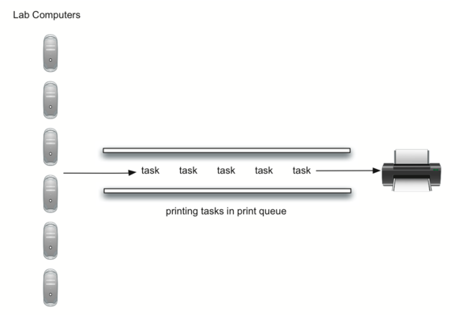
模擬需要表示學生、列印工作與印表機。學生送出列印工作時，工作加入印表機的等待佇列；印表機印完一份工作，就看 queue 裡還有沒有工作要處理。我們關心的是學生平均要等多久才拿到列印的東西，也就是工作在 queue 中平均等待的時間。
實驗室平均 10 個人，每人每小時印兩次，所以每小時約 20 個列印工作。換算成秒：
20 件/小時 × 1 小時/60 分 × 1 分/60 秒 = 1 件/180 秒
於是每一秒擲一顆 180 面的骰子，擲到 180 就生出一個工作（頁數 1 到 20 均勻隨機）。 可能連續好幾秒都有工作、也可能好幾分鐘沒動靜，這正是模擬的本性。
waits 留著計算；再依工作的頁數算出需要多少時間。C++17 的模型用 Task 值、queue<Task>，以及印表機裡的 optional<Task>。物件的擁有權由語言自動處理：整個模擬沒有原始的 new 或 delete，一次試驗結束時也不會留下沒釋放的工作。
busy() 看 optional 裡有沒有工作。startNext() 依頁數算出這份工作要印多少秒：頁數 × 60 ÷ 每分鐘頁數。tick() 把剩下的時間減一秒，工作完成時用 reset() 清空 optional。
每個工作也要記錄時間戳記，用來計算等待時間；時間戳記代表工作產生並放進印表機 queue 的時刻。
等待的隊伍是 std::queue<Task>，裡面放的是值，不是指標：
C++ 的 <random> 把產生亂數分成兩部分。引擎 std::mt19937 產生一長串看起來隨機的整數；分佈 std::uniform_int_distribution<int>(a, b) 把引擎的輸出轉成 a 到 b 之間、每個值機率相同的整數。用法是把引擎傳給分佈：pages(rng) 每呼叫一次，引擎就前進一步，得到下一個值。
模擬中，uniform_int_distribution<int>(1, 180) 每秒產生 180 個等可能值中的一個；把其中一個值（180）當成「有新工作」，平均就是每小時 20 件。頁數由 uniform_int_distribution<int>(1, 20) 決定。引擎以固定的種子（seed）初始化，例如 mt19937 rng(42)，每次執行都得到同一串亂數，課堂示範才能重現。
完整的程式把這些組合起來。simulation() 跑指定的秒數，最後印出平均等待時間，以及時間到時還留在 queue 裡的工作數；同一個引擎以參考 mt19937& 傳入，兩次模擬接續使用同一串亂數：
average wait = 37.3, tasks remaining = 1 average wait = 34.45, tasks remaining = 0
第一行是每分鐘 5 頁、第二行是每分鐘 10 頁，各模擬一小時（3600 秒）。tasks remaining 是一小時結束時還在 queue 裡、沒有開始印的工作數。這一次的亂數下兩者的平均等待差不多，只跑一次還看不出速度的影響。
講義以每分鐘 5 頁跑了 10 次獨立的一小時試驗。因為模擬使用亂數，每次的結果都不同，平均等待時間的變化很大。把速度改成每分鐘 10 頁再跑 10 次，等待時間通常會下降：速度較快時，一小時內能完成更多工作。
5 pages per minute average wait = 37.3, tasks remaining = 1 average wait = 95.8889, tasks remaining = 2 average wait = 119.579, tasks remaining = 0 average wait = 173.72, tasks remaining = 0 average wait = 48.7222, tasks remaining = 0 average wait = 77.95, tasks remaining = 0 average wait = 245, tasks remaining = 0 average wait = 69.6087, tasks remaining = 0 average wait = 135.778, tasks remaining = 3 average wait = 43.3333, tasks remaining = 0 10 pages per minute average wait = 107.424, tasks remaining = 0 average wait = 7.31579, tasks remaining = 0 average wait = 19.8462, tasks remaining = 0 average wait = 11.6875, tasks remaining = 0 average wait = 5.55556, tasks remaining = 0 average wait = 4.375, tasks remaining = 0 average wait = 13.1667, tasks remaining = 0 average wait = 9.94737, tasks remaining = 0 average wait = 42.7, tasks remaining = 0 average wait = 11.3333, tasks remaining = 0
每分鐘 5 頁時，平均等待從約 37 秒到 245 秒，常有工作沒印完；每分鐘 10 頁時，10 次中有 8 次在 20 秒以內，只有偶爾因為短時間湧入較多工作而拉長。
我們要回答的問題是：把印表機切成品質較好、速度較慢的模式，是否還應付得了工作量。做法是寫一個模擬，把列印工作看成抵達時間與長度都隨機的事件。結果顯示，以每分鐘 5 頁列印時等待時間起伏很大，放慢印表機換取品質可能不是好主意：學生趕著上下一堂課，等不了那麼久。這是模型在上述到達率與頁數假設下的結果，和使用哪一種程式語言無關。
也可以模擬其他的工作量，例如：
這些問題都可以藉由修改模型的參數來測試。結論的可靠程度，取決於這些假設。
arrival 改成 1 到 60。pages 的範圍改小，例如 1 到 10。為什麼是「每秒以 1/180 的機率生一個工作」？
雙端佇列（deque，唸作 deck）兩端都能加入與移除，一個人就能扮演 stack 或 queue。
代價是使用者要自己維持紀律，結構不再幫你防呆。cppds C++ 正文使用 std::deque：
push_front/push_back 與 pop_front/pop_back 都是常數時間。
addFront/removeFront 是課程實作 Deque<T> 的作業用介面。
deque 也叫 double-ended queue（雙端佇列），是一個和 queue 類似的有序集合，有 front 與 rear 兩端。它的不同之處在於加入與移除不受限制：新元素可以加在 front 或 rear，既有元素也可以從任一端移除。因此一個 deque 就能當 stack 用，也能當 queue 用。
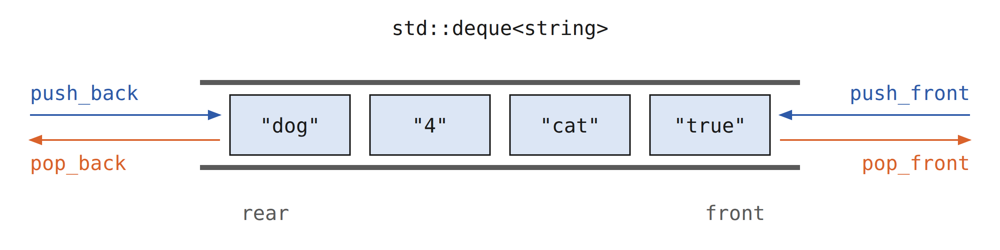
std::deque<T> d; 建立一個空的 deque。push_front(item) 與 push_back(item) 分別加到兩端。front() 與 back() 讀取兩端的元素。pop_front() 與 pop_back() 移除兩端的元素，回傳 void。empty() 與 size() 檢查狀態。課程標頭 pythonds3/cppds/deque.hpp 改為提供 Deque<T>，方法是 addFront、addRear，以及會回傳值的 removeFront／removeRear 與 isEmpty。它選擇的 vector 表示法讓其中一端的操作是 $O(n)$；這不是 std::deque 的複雜度。一般的 C++ 程式使用 std::deque；只有練習明確要求研究這種表示法與操作成本時，才用課程的 Deque<T>。
| std::deque<T> | 課程標頭 Deque<T> | 課程版的成本 |
|---|---|---|
push_front(x) | addFront(x) | $O(1)$（vector 尾端 push_back） |
push_back(x) | addRear(x) | $O(n)$（insert(begin())） |
front() 再 pop_front() | removeFront() | $O(1)$（pop_back） |
back() 再 pop_back() | removeRear() | $O(n)$（erase(begin())） |
empty()／size() | isEmpty()／size() | $O(1)$ |
下表把 front() 畫在左邊、back() 畫在右邊：
| 操作 | Deque 內容（front 在左） | 回傳 |
|---|---|---|
| d.empty() | [] | true |
| d.push_back(4) | [4] | void |
| d.push_front(7) | [7, 4] | void |
| d.front() | [7, 4] | 7 |
| d.back() | [7, 4] | 4 |
| d.pop_front() | [4] | void |
課程實作：教學版把 front 放在 vector 尾端，所以
addFront／removeFront 是 O(1)，addRear／removeRear 是 O(n)：兩端的成本並不對稱。
STL 的 std::deque 用分段連續的儲存做到兩端都 O(1)，實戰直接用它。
迴文（palindrome）是正著讀和反著讀都一樣的字串，例如 radar、toot、madam。我們要寫一個演算法，輸入一串字元，檢查它是不是迴文。
做法是用 deque 存放字串的字元。由左到右處理字串，把每個字元加到 deque 的 rear；到這裡為止，deque 的用法就像普通的 queue。接著利用 deque 兩端的能力：front 是字串的第一個字元，rear 是最後一個字元。
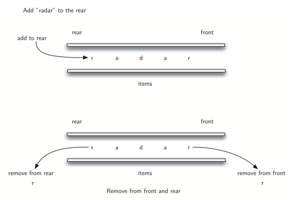
因為兩端的字元都能直接移除，就把它們拿出來比較，相同才繼續。若一路相同，最後 deque 不是空了，就是只剩一個字元，看原字串長度是偶數還是奇數而定。兩種情況下，字串都是迴文。
false true
"lsdkjfskf" 第一次比較 l 與 f 就不同，回傳 false；"radar" 比較 r 與 r、a 與 a 之後只剩 d，回傳 true。while 的條件是 size() > 1：剩下的一個字元是中點，不用再比。
把 1, 2, 3 依序 push 進 stack，途中任何時刻都可以 pop。下列哪個輸出序列不可能出現？
10 + 3 * 5 / ( 16 - 4 ) 的後序是 10 3 5 * 16 4 - / +。若用 int 運算（整數除法）做後序求值，答案是？
用「vector 尾端當 front」的 Deque 實作，下列哪組操作都是 O(1)？
除了上面的選擇題，講義在各節留了三個寫程式的練習，題目與參考解答放在對應的小節：
課本：Problem Solving with Algorithms and Data Structures using C++（cppds），第 3 章 Linear Structures：Runestone 線上版。
| ADT | 進 | 出 | 順序 | 典型應用 |
|---|---|---|---|---|
| Stack | top | top | LIFO | 括號配對、進位轉換、undo、函式呼叫堆疊、DFS |
| Queue | rear | front | FIFO | 排程、模擬（燙手山芋、印表機）、BFS |
| Deque | 兩端 | 兩端 | 由使用者決定 | 迴文、滑動視窗 |
| 操作 | vector 尾端 | vector 開頭 |
|---|---|---|
| 加入／移除 | $O(1)$（加入為攤銷） | $O(n)$（其餘元素整體搬移） |
| 課程標頭放在這一端的 | Stack 的 top、Queue 的 front、Deque 的 front | Stack2 的 top、Queue 的 rear、Deque 的 rear |
STL 的 std::stack、std::queue、std::deque 預設都以分段連續儲存的 deque 為底層，兩端的操作都是 $O(1)$。
如果 pop 要回傳值，就得先把元素複製出來再移除。複製若在途中失敗（例如丟出例外），元素已經從 stack 拿掉，卻沒有交到呼叫者手上，資料就遺失了。STL 把「讀取」與「移除」拆成 top() 與 pop() 兩步，讀取失敗時 stack 仍保持原狀。課程標頭的 Stack<T> 為了和 Python 版課本一致，pop() 會回傳值。
這違反前提條件，屬於未定義行為：程式可能當掉，也可能讀到無意義的值而繼續執行，錯誤很難追。呼叫之前先用 empty() 檢查，或像 parChecker 那樣，在 pop 之前先處理 stack 為空的情況。
可以，寫成 std::stack<int, std::vector<int>>，只要底層容器提供 back、push_back、pop_back。std::queue 需要從前端移除，要求 front 與 pop_front，所以不能用 vector，可以用預設的 deque 或 list。這也說明了 ADT 與實作分離：介面不變，底層可以換。
左括號在 stack 裡代表一個還沒結束的子式。把它的優先權設成最低，任何運算子進來時都不會因為「優先權大於等於自己」而把它 pop 出去；它只會在讀到對應的右括號時被移除，括號內的運算子就不會和括號外的混在一起。
後序只改變運算子的位置，運算元仍是原來的順序，所以先 push 的是左運算元。從 stack pop 時順序相反：先出來的是右運算元（operand2），後出來的才是左運算元（operand1）。加法與乘法看不出差別，減法與除法弄反就會算錯，例如 15 / 5 會變成 5 / 15。
單次結果受亂數影響很大，應該跑多次獨立試驗，觀察平均值與變化範圍，再比較不同設定。固定種子是為了讓同一個實驗能重現，方便除錯與說明；比較設定時，也可以換幾個不同的種子，確認結論不是某一串亂數造成的。
詞彙卡取自本章課程題庫，已譯為繁體中文，正面附英文原名。先看正面術語，心中默想定義再翻面對答案；洗牌後再過一輪，直到每張都能不假思索說出來。